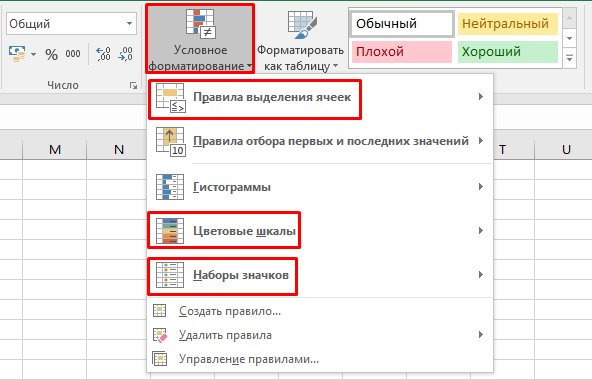

Условное форматирование
Андрей, продолжим улучшать наши таблицы и делать их еще более умными и удобными для работы. В этом уроке мы изучим условное форматирование — мощный инструмент для автоматического выделения важной информации в таблицах. С помощью условного форматирования мы сможем подсвечивать ячейки, которые соответствуют определенным условиям: например, дефицитные материалы, просроченные даты или самые высокие значения. Это позволит тебе быстрее анализировать информацию и принимать решения. В конце урока ты сможешь настроить несколько типов условного форматирования для различных случаев в своих строительных проектах.
Что такое условное форматирование
Условное форматирование — это инструмент, который позволяет менять внешний вид ячеек (цвет фона, шрифт, границы) в зависимости от их значений.

Типы условного форматирования:
Цветовые шкалы: используется для отображения значения ячеек в цветах от минимального до максимального.
Правила выделения ячеек: позволяет выделять ячейки с определенными значениями, например, больше или меньше заданного числа.
Иконки (значки): используются для отображения значений в виде небольших иконок, таких как стрелки или флажки.
Это позволяет создать более наглядные таблицы, где важные данные автоматически привлекают внимание.
Как применить условное форматирование

- Выдели диапазон ячеек, к которому хочешь применить форматирование.
- Перейди на вкладку «Главная» и выберите «Условное форматирование».
- Выбери нужное правило, например, «Цветовая шкала» или «Правила выделения ячеек».
- Настрой параметры, такие как диапазон значений или цвета.
Примеры использования
Рассмотрим несколько примеров, как можно использовать условное форматирование:
- «Подсветка дефицитных позиций»: Мы будем подсвечивать материалы, которых в проекте слишком мало, например, когда количество материала меньше определенной нормы.
- «Подсветка просроченных работ»: Для этого можно использовать условное форматирование, чтобы выделить работы с просроченной датой.
Практическая часть
Теперь давай применим условное форматирование на практике. Мы будем подсвечивать дефицитные материалы в нашей смете, чтобы сразу увидеть, какие позиции требуют внимания.
Что нужно сделать:
- Открой новый файл Excel или используй таблицу, которую мы создавали для сметы материалов.
- Выдели столбец «Количество» (столбец C), чтобы подсветить дефицитные материалы.
- Перейди на вкладку «Главная», выбери «Условное форматирование», затем «Правила выделения ячеек» и выбери «Меньше».
- В появившемся окне введи значение, например, «5» (это будет наш порог для дефицитных материалов). Установи желаемый цвет заливки, например, «красный».
- Нажми «ОК», и теперь все материалы с количеством меньше 5 будут подсвечиваться красным.
Условное форматирование помогает быстро выделить важную информацию, не тратя время на просмотр всех данных.
Отлично! Теперь твоя таблица стала намного удобнее для анализа благодаря условному форматированию. На следующем уроке мы рассмотрим, как работать с формулами в Excel для выполнения расчетов. Это поможет автоматизировать процессы и ускорить работу с большими данными. Чтобы перейти к следующему уроку нового курса, тебе необходимо выполнить домашнее задание и сдать промежуточный тест. Успехов в тестировании!